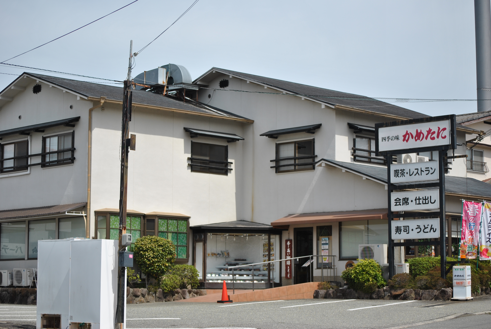

About
- 住所：大阪府豊能郡豊能町ときわ台5丁目8-11
- 電話：072-738-0660
(朝9時～電話に出ることができます) - 定休日：月・火（祝日は営業）
- 営業時間：11:00～21:00
四季折々の食材をふんだんに取り入れた季節限定メニューをお楽しみいただけます。季節ごとの味覚を存分に堪能してください。
サイト更新日：2026年1月4日

四季折々の食材をふんだんに取り入れた季節限定メニューをお楽しみいただけます。季節ごとの味覚を存分に堪能してください。
サイト更新日：2026年1月4日